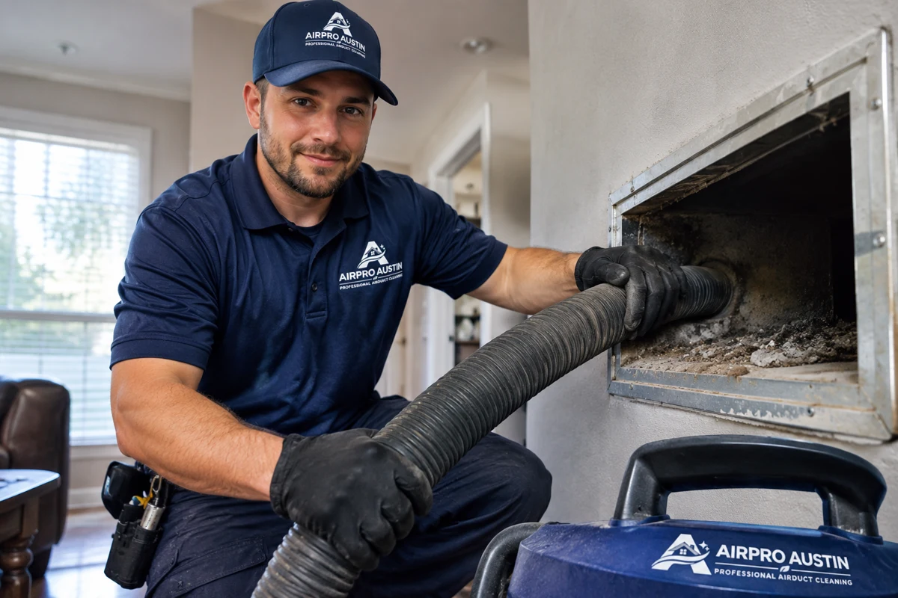
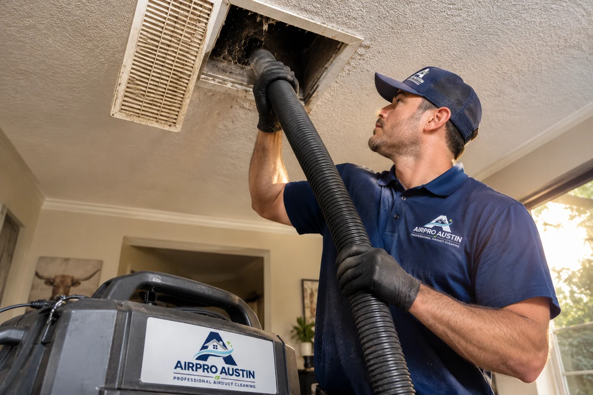
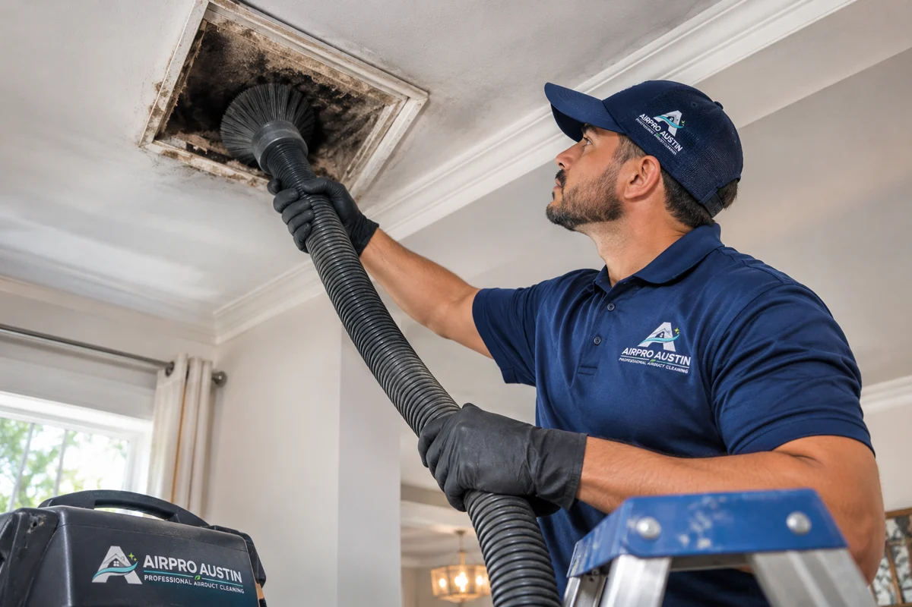

Full Camera Inspection
We inspect your ductwork with a camera and show you what changed before and after cleaning.




CLEANER AIR
HEALTHIER FAMILY
HEPA Approved home care services: Air duct cleaning, HVAC, AC maintenance, heating and ventilation, dryer vent cleaning!


GET A FAST QUOTE 100% FREE
Tell us what you need — we'll text you right back.

WHY HOMEOWNERS PICK US
We inspect your ductwork with a camera and show you what changed before and after cleaning.
We remove buildup from accessible supply and return ducts throughout the home.
Optional EPA-registered antimicrobial treatment is available after deep cleaning. HEPA-grade filtration helps capture dust loosened during cleaning.
We’re a family-owned Austin business. We take care of your home and explain what we find.
FIND YOUR SERVICE
Not sure what you need? Start with what you’ve noticed.
AIR DUCT CLEANING
Dust and debris can collect inside ductwork over time. We remove accessible buildup and address cleaning needs identified during an inspection.
Explore Air Duct CleaningDRYER VENT CLEANING
Lint buildup can restrict airflow in your dryer vent. We remove accumulated lint from the vent line and check for airflow problems.
Explore Dryer Vent CleaningCHIMNEY CLEANING
Soot, creosote and debris can build up inside chimneys. Our cleaning service removes deposits and helps identify concerns that need further inspection.
Explore Chimney CleaningHVAC UV LIGHT
Explore UV light options for compatible HVAC systems.
Explore HVAC UV LightHVAC DISINFECTION
Learn about available disinfection treatments and how they differ from routine duct cleaning.
Explore HVAC DisinfectionGUTTER SERVICES
Explore gutter cleaning, repair, and installation options for your home.
Explore Gutter ServicesSee What Our Google Customers Are Saying

“They were available same day. Seemed to do a very detailed cleaning. Very nice & easy to work with.”
“Roy was thorough and explained my options. He was very understanding and worked with me to get the job done. My vents are clean and it’s was an easy process.”
“AirPro Austin is very efficient and knows what they’re doing!”
“Roi made a special trip at the last minute at the end of the day, very professional. Thank you!”
“Roy knew exactly what to do”
“Great work. Prompt arrival, diagnosed the problem and fixed it same day. Would recommend for future work.”
KNOW WHAT TO EXPECT
Review our advertised basic cleaning options before scheduling.
For your home’s duct system
For a standard dryer vent run
Both basic services in one visit
Basic prices apply to eligible services. Additional cleaning, repairs or specialized work may require a separate quote. Confirm the service scope and current offer terms before booking.
A CLEAR PLAN FOR YOUR VISIT
We keep the process simple so you know what to expect.
Select the cleaning service you need and schedule an appointment.
Our technician reviews the relevant system and explains the recommended cleaning work.
We complete the agreed service and review any findings or additional concerns with you.
Clear service explanations. A review of the work needed. Customer feedback you can read for yourself.
Real Experiences Shared by Our Customers on Yelp


★★★★★
“Air ducts seem clean and I really like the UV light installed.”
★★★★★
“Roi was very friendly and did an excellent job at explaining the details of the job. Well done!”
★★★★★
“Roi and Eric worked efficiently and effectively to solve our issue. New filters and uv lights. Recommend them anytime.”
★★★★★
“Top-shelf customer support, timing, problem solving, and responsiveness.”
★★★★★
“Roi was great to work with. He explained what needed cleaning and showed us what was inside the vents. Really happy with how everything turned out.”
★★★★★
“Our dryer was taking two cycles to finish a load. They cleaned out a lot of lint, and it's been working much better since. Glad we called.”
★★★★★
“We had a lot of dust left over from remodeling. Roi and his team were careful around the house and showed us photos of the ducts. Good experience overall.”
★★★★★
“First time having our chimney cleaned in a while. The guys explained everything before starting and cleaned up after themselves. Would use them again.”
★★★★★
“Easy to schedule and they showed up when expected. Roi was friendly, answered my questions, and got the dryer vent cleaned without any issues.”
★★★★★
“Had a UV light installed in our AC system. They walked me through how it works and what maintenance it needs. Appreciate them taking the time to explain it.”
★★★★★
“Very professional from start to finish. They protected the area around our fireplace and didn't leave a mess behind. The whole appointment went smoothly.”
★★★★★
“Our gutters were packed with leaves. They cleared everything out and pointed out a section we should keep an eye on. Straightforward service.”
★★★★★
“Roi was very helpful and didn't rush through the appointment. He explained why the vent was getting clogged and answered all my questions. I'd definitely call again.”
★★★★★
“Good communication and easy scheduling. The crew showed us what they found in the ducts and explained the work before doing anything extra. No complaints.”
SERVICES YOU CAN SEE. FEEDBACK YOU CAN READ.


Why Homeowners Choose AirPro Austin on Thumbtack
★★★★★
“Roi did an amazing job with my vent cleaning. He took time to explain how everything worked and did incredible work. I will use him for every yearly cleaning from here on out. 10/10 experience!!!”
★★★★★
“Roi was amazing - went above and beyond to clean a very challenging duct. Cleaned up afterward. So glad I used Airpro Austin. Highly recommend!”
★★★★★
“Roy is amazing! Knowledgeable, professional and an expert in his field. He explained every step along the way...even drew sketches of the process to clean our air ducts and all the vents. Plus, a very nice man who strives to do a great job.”
★★★★★
“Roi showed up the next day and inspected and gave us a quote. When we accepted the quote he showed up the next day to begin work.”
★★★★★
“He shared options and pricing quickly with me and was flexible to the fact that I was in between meetings while he worked.”
★★★★★
“They did a great job! Very responsive.”
★★★★★
“Roy was great and thorough. Identified the exact problem and gave me a quick estimate on time and cost. Was in and out quickly”
★★★★★
“Roy did a great job in helping with our duct cleaning. He provided detailed estimates and provided the service that is only required.”
★★★★★
“They responded right away and were able to take care of the dryer vent cleaning immediately. Will recommend for future services.”
★★★★★
“Cleaned out clogged dryer vent and reconnected it. Showed up on time and did what was needed to fix the issues shown in the photos below. Would hire again.”
LOCAL TO YOUR HOME
Serving Austin and surrounding Central Texas communities. Call to confirm availability for your address.
A LITTLE CLARITY BEFORE YOU BOOK
Have a question about your home? We’re here to help.
Call (512) 677-1878Visible debris inside ductwork, dust after renovations, or particles coming from supply vents may be reasons to request an inspection. Dust around a vent alone does not always mean the entire system needs cleaning.
Learn more about Air Duct Cleaning in Austin or read the EPA's air duct cleaning guidance.
Clothes taking longer to dry, an unusually hot dryer, or lint around the outside vent may indicate restricted airflow. The dryer itself may also need attention.
Explore our Dryer Vent Cleaning Service and learn about dryer fire safety from the U.S. Fire Administration.
AirPro Austin advertises basic air duct cleaning starting at $199 for eligible homes. The price covers the approved basic service, while deeper cleaning and additional work may cost extra.
Yes. AirPro Austin currently advertises both basic services together for $298, subject to eligibility and service terms. Additional cleaning or repairs may require a separate quote.
Explore Air Duct Cleaning and Dryer Vent Cleaning before booking.
AirPro Austin serves Austin and nearby communities, including Round Rock, Cedar Park, Pflugerville, Georgetown, and Leander. Service availability may vary by location and service type.
Contact AirPro Austin or call (512) 677-1878 to confirm service at your address.
The Chimney Safety Institute of America recommends having chimneys inspected at least once a year and cleaned when needed. The right cleaning schedule depends on use and the chimney's condition.
Explore our Chimney Cleaning & Sweeping Service or review the CSIA homeowner guidance.
No. UV lights do not physically remove dust or debris from ductwork. Certain UV systems are designed to treat exposed HVAC surfaces, but their effectiveness depends on the equipment and conditions.
Learn about HVAC UV Light Installation and read the EPA's guidance on UV lights and mold.
No. Air duct cleaning removes physical dust and debris. HVAC disinfection involves a separate treatment, and the product must be suitable for the surfaces being treated. Not every system needs disinfection.
Compare our HVAC Disinfection Service with Air Duct Cleaning.
Overflowing water, visible leaves, leaking joints, or sagging gutters are signs that your gutter system needs attention. Debris may require cleaning, while damaged sections may need repair.
Explore our Gutter Cleaning, Repair & Installation Services or learn how gutters manage rainwater from the Building America Solution Center.
You can request an appointment online or call (512) 677-1878. AirPro Austin collects the contact and service details needed to respond to your request.
Visit our Contact Page to get started, or read our Privacy Policy to learn how your information is handled.